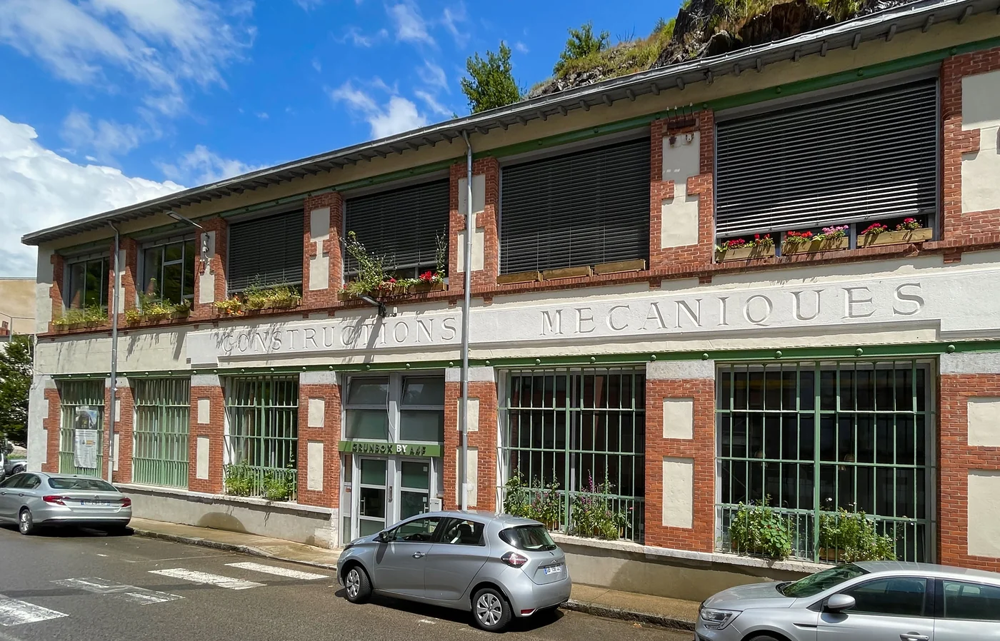
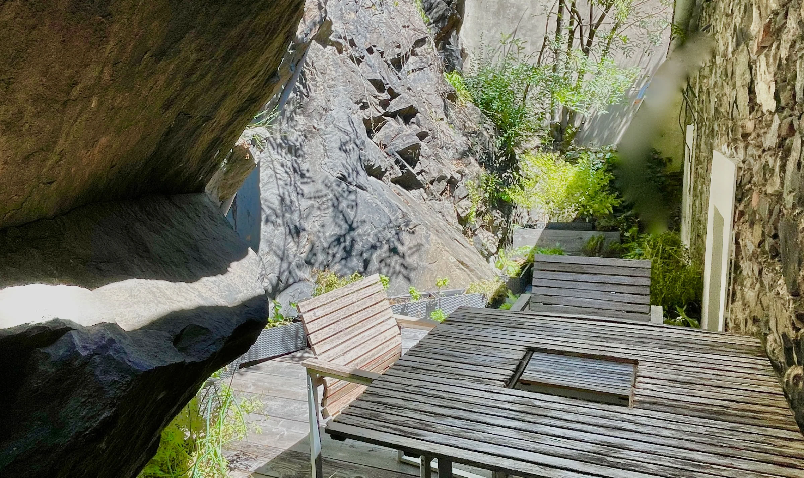

Nos réalisations




Agence d’architecture à Vienne : réhabilitation, habitat et urbanisme, toujours avec le végétal au cœur du projet.
Découvrir nos projetsDes espaces qui évoluent avec leurs habitants.
Des lieux de rencontre et d’entraide.
Low-tech, réemploi, matériaux naturels.
Des murs végétalisés aux toits verts.

Îlots de fraîcheur, eau de pluie retenue, biodiversité et lien social : les plantes ne décorent pas, elles font partie de l’architecture.